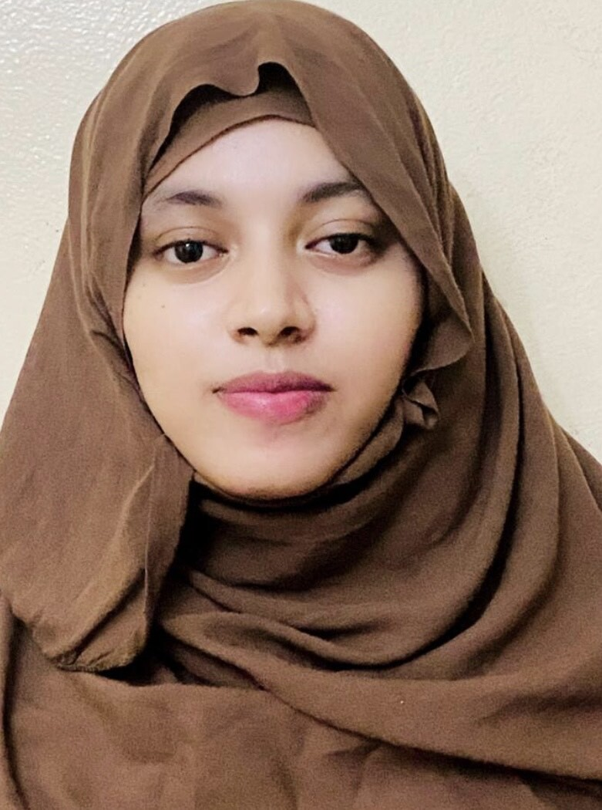

About Me
Je suis étudiante ingénieure en Statistique et Ingénierie des Données à l’École Supérieure Polytechnique de Nouakchott. Je suis passionnée par l’analyse de données et la résolution de problèmes complexes à l’aide des statistiques et de l’apprentissage automatique. J’ai hâte d’appliquer mes connaissances et mes compétences dans des projets pratiques et de contribuer au domaine de la science des données.
Experience
ANSADE
Projet Industriel en Entreprise
2022-2023
Le projet avait pour objectif d’analyser les déterminants de l’anémie chez les enfants de moins de cinq ans. J’ai travaillé en étroite collaboration avec une équipe multidisciplinaire pour analyser les données, et j’ai contribué à l’interprétation des résultats et à la rédaction du rapport final.
Stage ouvrier
juillet 2022 - août 2022
Pendant mon stage ouvrier chez ANSADE, j’ai travaillé sur un projet portant sur l’analyse de la balance commerciale de la Mauritanie sous les derniers régimes présidentiels. Mon rôle consistait à effectuer des analyses statistiques approfondies et créer des visualisations pour présenter les résultats. Ce stage m’a permis d’acquérir une expérience précieuse dans le domaine de l’analyse économique et de renforcer mes compétences en matière de traitement des données.
Startup Mauritania
Projet entrepreneuriat et innovation
October 2021 - Juin 2022
Dans le cadre du projet entrepreneuriat et innovation, nous avons conçu et mis en œuvre un système d’arrosage automatique de précision. Ce système permet de fournir la quantité précise d’eau nécessaire à une plante pendant une période donnée sans l’intervention humaine. J’ai été responsable de la conception de l’architecture logicielle et de la programmation du système.
Languages
Arabic - Native
French - Advanced
English - Intermediate
Skills
- Programming
- PythonRSQLSTATAVBA
- Frameworks
- FlaskDjango
- Databases
- MySQLMongoDB
- Modeling
- UMLMerise
- Operating Systems
- WindowsLinux
- Machine Learning
- Predictive ModelsClustering
- Office Tools
- WordExcelPowerPointLaTeX
Education
Cycle ingénieure
École Supérieure Polytechnique de Nouakchott2021- Présent
Classe Préparatoire MPSI & MP
École Supérieure Polytechnique de Nouakchott2019-2021
Baccalaureate Serie Mathématique
islah raid, Nouakchott2018-2019